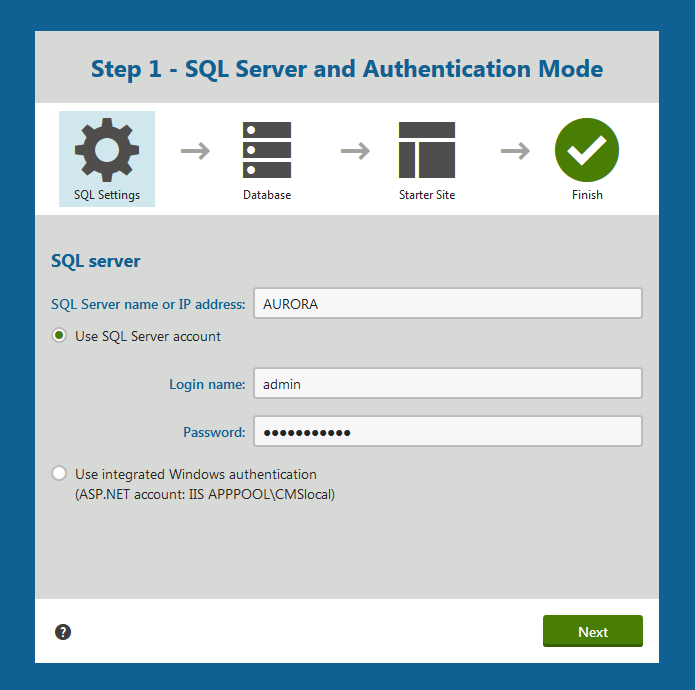

Additional database installation
If you chose not to install the database during the installation process, you can install it later. To trigger the database installation, access any page of your web project in a browser. The system will redirect you to the database installation wizard.
Step 1 - SQL Server and Authentication Mode
Specify the SQL Server and authentication mode used to access the server:
SQL Server name or IP address - enter the name of the server. You will typically use one of these:
the name of the server (such as DBSERVER1)
the IP address of the server (such as 192.168.1.105)
(local)<SERVERNAME>\sqlexpress (if you're using Microsoft SQL Server Express Edition)
Use SQL Server account - use this option if your server is configured for SQL Server Authentication with SQL logins.
Use integrated Windows authentication (ASP.NET account) - use this option if your SQL Server is configured for Windows integrated authentication. In this case, you need to use SQL Server Management Studio to create a new login for user account under which you currently run the web application (for example, the NT AUTHORITY\NETWORK SERVICE for Windows 7 - the actual ASP.NET account name is displayed on the screen).

Database installer in a browser
Click Next.
Step 2 - Database Instance
Now you can decide if you want to use an existing database or create a new database. In both cases, you need to enter the name of the database into the appropriate field.
In case you are using an existing database, you can choose if you want to Create Kentico database objects.
If the existing database already contains Kentico objects (tables, stored procedures, views), then clear the check box.
If the database does not contain these objects (typically when you are installing into an empty database), leave the check box enabled.
Database Collation
When using an existing database, you may also come across the Database Collation dialog. The dialog appears if the database collation is different than Latin1_General_CI_AS or SQL_Latin1_General_CP1_CI_AS. The dialog allows you to choose if you want to change the collation or leave the original one.
We recommend changing the collation to Latin1_General_CI_AS.
Step 3 - Database Creation Log
The installer displays a log, showing the progress of database creation.
Step 5 - License Key
If you run Kentico on a domain other than localhost or 127.0.0.x (where x is between 1 and 255), you will be asked to insert a license key. Since the trial version works only with http://localhost and http://127.0.0.x (where x is between 1 and 255), the same dialog is displayed if your trial period has expired.
Enter a valid license key and click Next.
Alternatively, you can click Skip this dialog and continue to the New site wizard . You can enter a license key later in the Licenses application. See License management for more information.
Step 6 - Starter Site
The installer offers you the following options:
Choose a starter site - select this option if you want to install a site that demonstrates the capabilities of Kentico.
Create a new site or import an existing Kentico site - redirects you to the Sites application within the Kentico interface.
Use the New site wizard if you wish to create a new site from scratch.
Also allows you to import existing sites if you have already created an export package with a website and you need to import it into a new installation (for example on a production server).
If you're new to Kentico, it's highly recommended to start with the Dancing Goat or Corporate Site sample site.
Step 7 - Starter Site Creation Log
The installer displays a log showing the progress of website creation.
Step 8 - Finished
Once the website is created, the installer displays a confirmation and you can follow the link to access the new live website.
This is the final step of the necessary installation procedure.
Default user name and password
The default user name is administrator, the default password is blank.
It's highly recommended that you change the password after you finish the installation.
The default URL of your site is: http://localhost/Kentico
The default URL of the administration interface is: http://localhost/Kentico/Admin.